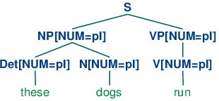
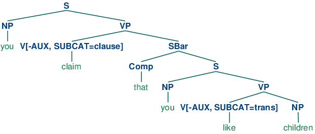
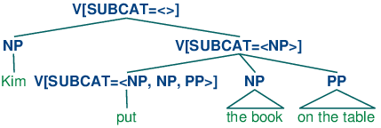
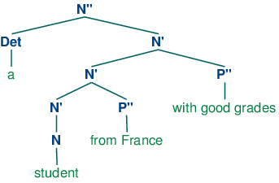
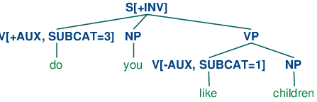
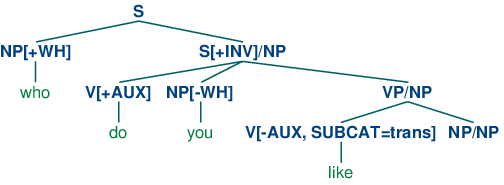
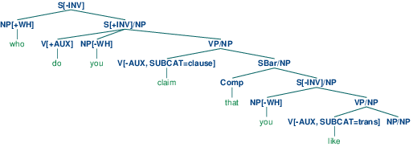

9. Building Feature Based Grammars
Natural languages have an extensive range of grammatical constructions which are hard to handle with the simple methods described in 8.. In order to gain more flexibility, we change our treatment of grammatical categories like S, NP and V. In place of atomic labels, we decompose them into structures like dictionaries, where features can take on a range of values.
The goal of this chapter is to answer the following questions:
- How can we extend the framework of context free grammars with features so as to gain more fine-grained control over grammatical categories and productions?
- What are the main formal properties of feature structures and how do we use them computationally?
- What kinds of linguistic patterns and grammatical constructions can we now capture with feature based grammars?
Along the way, we will cover more topics in English syntax, including phenomena such as agreement, subcategorization, and unbounded dependency constructions.
1 Grammatical Features
In chap-data-intensive, we described how to build classifiers that rely on detecting features of text. Such features may be quite simple, such as extracting the last letter of a word, or more complex, such as a part-of-speech tag which has itself been predicted by the classifier. In this chapter, we will investigate the role of features in building rule-based grammars. In contrast to feature extractors, which record features that have been automatically detected, we are now going to declare the features of words and phrases. We start off with a very simple example, using dictionaries to store features and their values.
|
The objects kim and chase both have a couple of shared features, CAT (grammatical category) and ORTH (orthography, i.e., spelling). In addition, each has a more semantically-oriented feature: kim['REF'] is intended to give the referent of kim, while chase['REL'] gives the relation expressed by chase. In the context of rule-based grammars, such pairings of features and values are known as feature structures, and we will shortly see alternative notations for them.
Feature structures contain various kinds of information about grammatical entities. The information need not be exhaustive, and we might want to add further properties. For example, in the case of a verb, it is often useful to know what "semantic role" is played by the arguments of the verb. In the case of chase, the subject plays the role of "agent", while the object has the role of "patient". Let's add this information, using 'sbj' and 'obj' as placeholders which will get filled once the verb combines with its grammatical arguments:
|
If we now process a sentence Kim chased Lee, we want to "bind" the verb's agent role to the subject and the patient role to the object. We do this by linking to the REF feature of the relevant NP. In the following example, we make the simple-minded assumption that the NPs immediately to the left and right of the verb are the subject and object respectively. We also add a feature structure for Lee to complete the example.
|
The same approach could be adopted for a different verb, say surprise, though in this case, the subject would play the role of "source" (SRC) and the object, the role of "experiencer" (EXP):
|
Feature structures are pretty powerful, but the way in which we have manipulated them is extremely ad hoc. Our next task in this chapter is to show how the framework of context free grammar and parsing can be expanded to accommodate feature structures, so that we can build analyses like this in a more generic and principled way. We will start off by looking at the phenomenon of syntactic agreement; we will show how agreement constraints can be expressed elegantly using features, and illustrate their use in a simple grammar.
Since feature structures are a general data structure for representing information of any kind, we will briefly look at them from a more formal point of view, and illustrate the support for feature structures offered by NLTK. In the final part of the chapter, we demonstrate that the additional expressiveness of features opens up a wide spectrum of possibilities for describing sophisticated aspects of linguistic structure.
1.1 Syntactic Agreement
The following examples show pairs of word sequences, the first of which is grammatical and the second not. (We use an asterisk at the start of a word sequence to signal that it is ungrammatical.)
| (1) |
|
| (2) |
|
In English, nouns are usually marked as being singular or plural. The form of the demonstrative also varies: this (singular) and these (plural). Examples (1b) and (2b) show that there are constraints on the use of demonstratives and nouns within a noun phrase: either both are singular or both are plural. A similar constraint holds between subjects and predicates:
| (3) |
|
| (4) |
|
Here we can see that morphological properties of the verb co-vary with syntactic properties of the subject noun phrase. This co-variance is called agreement. If we look further at verb agreement in English, we will see that present tense verbs typically have two inflected forms: one for third person singular, and another for every other combination of person and number, as shown in 1.1.
| singular | plural | |
| 1st per | I run | we run |
| 2nd per | you run | you run |
| 3rd per | he/she/it runs | they run |
We can make the role of morphological properties a bit more explicit as illustrated in ex-runs and ex-run. These representations indicate that the verb agrees with its subject in person and number. (We use "3" as an abbreviation for 3rd person, "SG" for singular and "PL" for plural.)
Let's see what happens when we encode these agreement constraints in a context-free grammar. We will begin with the simple CFG in (5).
| (5) | S -> NP VP NP -> Det N VP -> V Det -> 'this' N -> 'dog' V -> 'runs' |
Grammar (5) allows us to generate the sentence this dog runs; however, what we really want to do is also generate these dogs run while blocking unwanted sequences like *this dogs run and *these dog runs. The most straightforward approach is to add new non-terminals and productions to the grammar:
| (6) | S -> NP_SG VP_SG S -> NP_PL VP_PL NP_SG -> Det_SG N_SG NP_PL -> Det_PL N_PL VP_SG -> V_SG VP_PL -> V_PL Det_SG -> 'this' Det_PL -> 'these' N_SG -> 'dog' N_PL -> 'dogs' V_SG -> 'runs' V_PL -> 'run' |
In place of a single production expanding S, we now have two productions, one covering the sentences involving singular subject NPs and VPs, the other covering sentences with plural subject NPs and VPs. In fact, every production in (5) has two counterparts in (6). With a small grammar, this is not really such a problem, although it is aesthetically unappealing. However, with a larger grammar that covers a reasonable subset of English constructions, the prospect of doubling the grammar size is very unattractive. Let's suppose now that we used the same approach to deal with first, second and third person agreement, for both singular and plural. This would lead to the original grammar being multiplied by a factor of 6, which we definitely want to avoid. Can we do better than this? In the next section we will show that capturing number and person agreement need not come at the cost of "blowing up" the number of productions.
1.2 Using Attributes and Constraints
We spoke informally of linguistic categories having properties; for example, that a noun has the property of being plural. Let's make this explicit:
| (7) | N[NUM=pl] |
In (7), we have introduced some new notation which says that the category N has a (grammatical) feature called NUM (short for 'number') and that the value of this feature is pl (short for 'plural'). We can add similar annotations to other categories, and use them in lexical entries:
| (8) | Det[NUM=sg] -> 'this' Det[NUM=pl] -> 'these' N[NUM=sg] -> 'dog' N[NUM=pl] -> 'dogs' V[NUM=sg] -> 'runs' V[NUM=pl] -> 'run' |
Does this help at all? So far, it looks just like a slightly more verbose alternative to what was specified in (6). Things become more interesting when we allow variables over feature values, and use these to state constraints:
| (9) | S -> NP[NUM=?n] VP[NUM=?n] NP[NUM=?n] -> Det[NUM=?n] N[NUM=?n] VP[NUM=?n] -> V[NUM=?n] |
We are using ?n as a variable over values of NUM; it can be instantiated either to sg or pl, within a given production. We can read the first production as saying that whatever value NP takes for the feature NUM, VP must take the same value.
In order to understand how these feature constraints work, it's helpful to think about how one would go about building a tree. Lexical productions will admit the following local trees (trees of depth one):
| (10) |
|
| (11) |
|
Now S -> NP[NUM=?n] VP[NUM=?n] says that whatever the NUM values of N and Det are, they have to be the same. Consequently, NP[NUM=?n] -> Det[NUM=?n] N[NUM=?n] will permit (10a) and (11a) to be combined into an NP as shown in (12a) and it will also allow (10b) and (11b) to be combined, as in (12b). By contrast, (13a) and (13b) are prohibited because the roots of their subtrees differ in their values for the NUM feature; this incompatibility of values is indicated informally with a FAIL value at the top node.
| (12) |
|
| (13) |
|
Production VP[NUM=?n] -> V[NUM=?n] says that the NUM value of the head verb has to be the same as the NUM value of the VP parent. Combined with the production for expanding S, we derive the consequence that if the NUM value of the subject head noun is pl, then so is the NUM value of the VP's head verb.
| (14) |  |
Grammar (8) illustrated lexical productions for determiners like this and these which require a singular or plural head noun respectively. However, other determiners in English are not choosy about the grammatical number of the noun they combine with. One way of describing this would be to add two lexical entries to the grammar, one each for the singular and plural versions of determiner such as the
Det[NUM=sg] -> 'the' | 'some' | 'any' Det[NUM=pl] -> 'the' | 'some' | 'any'
However, a more elegant solution is to leave the NUM value underspecified and letting it agree in number with whatever noun it combines with. Assigning a variable value to NUM is one way of achieving this result:
Det[NUM=?n] -> 'the' | 'some' | 'any'
But in fact we can be even more economical, and just omit any specification for NUM in such productions. We only need to explicitly enter a variable value when this constrains another value elsewhere in the same production.
The grammar in 1.1 illustrates most of the ideas we have introduced so far in this chapter, plus a couple of new ones.
| ||
Example 1.1 (code_feat0cfg.py): Figure 1.1: Example Feature based Grammar |
Notice that a syntactic category can have more than one feature; for example, V[TENSE=pres, NUM=pl]. In general, we can add as many features as we like.
A final detail about 1.1 is the statement %start S. This "directive" tells the parser to take S as the start symbol for the grammar.
In general, when we are trying to develop even a very small grammar, it is convenient to put the productions in a file where they can be edited, tested and revised. We have saved 1.1 as a file named 'feat0.fcfg' in the NLTK data distribution. You can make your own copy of this for further experimentation using nltk.data.load().
1.2 illustrates the operation of a chart
parser with a feature-based grammar.
After tokenizing the input, we import the load_parser function
![[1]](callouts/callout1.gif) which takes a grammar filename as input and returns a
chart parser cp
which takes a grammar filename as input and returns a
chart parser cp ![[2]](callouts/callout2.gif) . Calling the parser's
parse() method will iterate over the resulting parse trees;
trees will be empty if the grammar fails to parse the input and
will contain one or more parse trees, depending on whether the input
is syntactically ambiguous or not.
. Calling the parser's
parse() method will iterate over the resulting parse trees;
trees will be empty if the grammar fails to parse the input and
will contain one or more parse trees, depending on whether the input
is syntactically ambiguous or not.
Example 1.2 (code_featurecharttrace.py): Figure 1.2: Trace of Feature based Chart Parser |
The details of the parsing procedure are not that important for present purposes. However, there is an implementation issue which bears on our earlier discussion of grammar size. One possible approach to parsing productions containing feature constraints is to compile out all admissible values of the features in question so that we end up with a large, fully specified CFG along the lines of (6). By contrast, the parser process illustrated above works directly with the underspecified productions given by the grammar. Feature values "flow upwards" from lexical entries, and variable values are then associated with those values, via bindings (i.e., dictionaries) such as {?n: 'sg', ?t: 'pres'}. As the parser assembles information about the nodes of the tree it is building, these variable bindings are used to instantiate values in these nodes; thus the underspecified VP[NUM=?n, TENSE=?t] -> TV[NUM=?n, TENSE=?t] NP[] becomes instantiated as VP[NUM='sg', TENSE='pres'] -> TV[NUM='sg', TENSE='pres'] NP[] by looking up the values of ?n and ?t in the bindings.
Finally, we can inspect the resulting parse trees (in this case, a single one).
|
1.3 Terminology
So far, we have only seen feature values like sg and pl. These simple values are usually called atomic — that is, they can't be decomposed into subparts. A special case of atomic values are boolean values, that is, values that just specify whether a property is true or false. For example, we might want to distinguish auxiliary verbs such as can, may, will and do with the boolean feature AUX. For example, the production V[TENSE=pres, AUX=+] -> 'can' means that can receives the value pres for TENSE and + or true for AUX. There is a widely adopted convention which abbreviates the representation of boolean features f; instead of AUX=+ or AUX=-, we use +AUX and -AUX respectively. These are just abbreviations, however, and the parser interprets them as though + and - are like any other atomic value. (15) shows some representative productions:
| (15) | V[TENSE=pres, +AUX] -> 'can' V[TENSE=pres, +AUX] -> 'may' V[TENSE=pres, -AUX] -> 'walks' V[TENSE=pres, -AUX] -> 'likes' |
We have spoken of attaching "feature annotations" to syntactic categories. A more radical approach represents the whole category — that is, the non-terminal symbol plus the annotation — as a bundle of features. For example, N[NUM=sg] contains part of speech information which can be represented as POS=N. An alternative notation for this category therefore is [POS=N, NUM=sg].
In addition to atomic-valued features, features may take values that are themselves feature structures. For example, we can group together agreement features (e.g., person, number and gender) as a distinguished part of a category, grouped together as the value of AGR. In this case, we say that AGR has a complex value. (16) depicts the structure, in a format known as an attribute value matrix (AVM).
| (16) | [POS = N ] [ ] [AGR = [PER = 3 ]] [ [NUM = pl ]] [ [GND = fem ]] |

Figure 1.3: Rendering a Feature Structure as an Attribute Value Matrix
In passing, we should point out that there are alternative approaches for displaying AVMs; 1.3 shows an example. Athough feature structures rendered in the style of (16) are less visually pleasing, we will stick with this format, since it corresponds to the output we will be getting from NLTK.
On the topic of representation, we also note that feature structures, like dictionaries, assign no particular significance to the order of features. So (16) is equivalent to:
| (17) | [AGR = [NUM = pl ]] [ [PER = 3 ]] [ [GND = fem ]] [ ] [POS = N ] |
Once we have the possibility of using features like AGR, we can refactor a grammar like 1.1 so that agreement features are bundled together. A tiny grammar illustrating this idea is shown in (18).
| (18) | S -> NP[AGR=?n] VP[AGR=?n] NP[AGR=?n] -> PropN[AGR=?n] VP[TENSE=?t, AGR=?n] -> Cop[TENSE=?t, AGR=?n] Adj Cop[TENSE=pres, AGR=[NUM=sg, PER=3]] -> 'is' PropN[AGR=[NUM=sg, PER=3]] -> 'Kim' Adj -> 'happy' |
2 Processing Feature Structures
In this section, we will show how feature structures can be constructed and manipulated in NLTK. We will also discuss the fundamental operation of unification, which allows us to combine the information contained in two different feature structures.
Feature structures in NLTK are declared with the FeatStruct() constructor. Atomic feature values can be strings or integers.
|
A feature structure is actually just a kind of dictionary, and so we access its values by indexing in the usual way. We can use our familiar syntax to assign values to features:
|
We can also define feature structures that have complex values, as discussed earlier.
|
An alternative method of specifying feature structures is to use a bracketed string consisting of feature-value pairs in the format feature=value, where values may themselves be feature structures:
|
Feature structures are not inherently tied to linguistic objects; they are general purpose structures for representing knowledge. For example, we could encode information about a person in a feature structure:
|
In the next couple of pages, we are going to use examples like this to explore standard operations over feature structures. This will briefly divert us from processing natural language, but we need to lay the groundwork before we can get back to talking about grammars. Hang on tight!
It is often helpful to view feature structures as graphs; more specifically, directed acyclic graphs (DAGs). (19) is equivalent to the above AVM.
| (19) |  |
The feature names appear as labels on the directed arcs, and feature values appear as labels on the nodes that are pointed to by the arcs.
Just as before, feature values can be complex:
| (20) |  |
When we look at such graphs, it is natural to think in terms of paths through the graph. A feature path is a sequence of arcs that can be followed from the root node. We will represent paths as tuples. Thus, ('ADDRESS', 'STREET') is a feature path whose value in (20) is the node labeled 'rue Pascal'.
Now let's consider a situation where Lee has a spouse named Kim, and Kim's address is the same as Lee's. We might represent this as (21).
| (21) |  |
However, rather than repeating the address information in the feature structure, we can "share" the same sub-graph between different arcs:
| (22) |  |
In other words, the value of the path ('ADDRESS') in (22) is identical to the value of the path ('SPOUSE', 'ADDRESS'). DAGs such as (22) are said to involve structure sharing or reentrancy. When two paths have the same value, they are said to be equivalent.
In order to indicate reentrancy in our matrix-style representations, we will prefix the first occurrence of a shared feature structure with an integer in parentheses, such as (1). Any later reference to that structure will use the notation ->(1), as shown below.
|
The bracketed integer is sometimes called a tag or a coindex. The choice of integer is not significant. There can be any number of tags within a single feature structure.
|
2.1 Subsumption and Unification
It is standard to think of feature structures as providing partial information about some object, in the sense that we can order feature structures according to how much information they contain. For example, (23a) has less information than (23b), which in turn has less information than (23c).
| (23) |
|
This ordering is called subsumption; FS0 subsumes FS1 if all the information contained in FS0 is also contained in FS1. We use the symbol ⊑ to represent subsumption.
When we add the possibility of reentrancy, we need to be more careful about how we describe subsumption: if FS0 ⊑ FS1, then FS1 must have all the paths and reentrancies of FS0. Thus, (20) subsumes (22), since the latter has additional reentrancies. It should be obvious that subsumption only provides a partial ordering on feature structures, since some feature structures are incommensurable. For example, (24) neither subsumes nor is subsumed by (23a).
| (24) | [TELNO = 01 27 86 42 96] |
So we have seen that some feature structures carry more information than others. How do we go about adding more information to a given feature structure? For example, we might decide that addresses should consist of not just a street number and a street name, but also a city. That is, we might want to merge graph (25b) with (25a) to yield (25c).
| (25) |
|


Merging information from two feature structures is called unification and is supported by the unify() method.
|
Unification is formally defined as a (partial) binary operation: FS0 ⊔ FS1. Unification is symmetric, so FS0 ⊔ FS1 = FS1 ⊔ FS0. The same is true in Python:
|
If we unify two feature structures which stand in the subsumption relationship, then the result of unification is the most informative of the two:
| (26) | If FS0 ⊑ FS1, then FS0 ⊔ FS1 = FS1 |
For example, the result of unifying (23b) with (23c) is (23c).
Unification between FS0 and FS1 will fail if the two feature structures share a path π, but the value of π in FS0 is a distinct atom from the value of π in FS1. This is implemented by setting the result of unification to be None.
|
Now, if we look at how unification interacts with structure-sharing, things become really interesting. First, let's define (21) in Python:
|
What happens when we augment Kim's address with a specification for CITY? Notice that fs1 needs to include the whole path from the root of the feature structure down to CITY.
|
By contrast, the result is very different if fs1 is unified with the structure-sharing version fs2 (also shown earlier as the graph (22)):
|
Rather than just updating what was in effect Kim's "copy" of Lee's address, we have now updated both their addresses at the same time. More generally, if a unification adds information to the value of some path π, then that unification simultaneously updates the value of any path that is equivalent to π.
As we have already seen, structure sharing can also be stated using variables such as ?x.
|
3 Extending a Feature based Grammar
In this section, we return to feature based grammar and explore a variety of linguistic issues, and demonstrate the benefits of incorporating features into the grammar.
3.1 Subcategorization
In 8., we augmented our category labels to represent different kinds of verb, and used the labels IV and TV for intransitive and transitive verbs respectively. This allowed us to write productions like the following:
| (27) | VP -> IV VP -> TV NP |
Although we know that IV and TV are two kinds of V, they are just atomic nonterminal symbols from a CFG, as distinct from each other as any other pair of symbols. This notation doesn't let us say anything about verbs in general, e.g. we cannot say "All lexical items of category V can be marked for tense", since walk, say, is an item of category IV, not V. So, can we replace category labels such as TV and IV by V along with a feature that tells us whether the verb combines with a following NP object or whether it can occur without any complement?
A simple approach, originally developed for a grammar framework called Generalized Phrase Structure Grammar (GPSG), tries to solve this problem by allowing lexical categories to bear a SUBCAT which tells us what subcategorization class the item belongs to. While GPSG used integer values for SUBCAT, the example below adopts more mnemonic values, namely intrans, trans and clause:
| (28) | VP[TENSE=?t, NUM=?n] -> V[SUBCAT=intrans, TENSE=?t, NUM=?n] VP[TENSE=?t, NUM=?n] -> V[SUBCAT=trans, TENSE=?t, NUM=?n] NP VP[TENSE=?t, NUM=?n] -> V[SUBCAT=clause, TENSE=?t, NUM=?n] SBar V[SUBCAT=intrans, TENSE=pres, NUM=sg] -> 'disappears' | 'walks' V[SUBCAT=trans, TENSE=pres, NUM=sg] -> 'sees' | 'likes' V[SUBCAT=clause, TENSE=pres, NUM=sg] -> 'says' | 'claims' V[SUBCAT=intrans, TENSE=pres, NUM=pl] -> 'disappear' | 'walk' V[SUBCAT=trans, TENSE=pres, NUM=pl] -> 'see' | 'like' V[SUBCAT=clause, TENSE=pres, NUM=pl] -> 'say' | 'claim' V[SUBCAT=intrans, TENSE=past, NUM=?n] -> 'disappeared' | 'walked' V[SUBCAT=trans, TENSE=past, NUM=?n] -> 'saw' | 'liked' V[SUBCAT=clause, TENSE=past, NUM=?n] -> 'said' | 'claimed' |
When we see a lexical category like V[SUBCAT=trans], we can interpret the SUBCAT specification as a pointer to a production in which V[SUBCAT=trans] is introduced as the head child in a VP production. By convention, there is a correspondence between the values of SUBCAT and the productions that introduce lexical heads. On this approach, SUBCAT can only appear on lexical categories; it makes no sense, for example, to specify a SUBCAT value on VP. As required, walk and like both belong to the category V. Nevertheless, walk will only occur in VPs expanded by a production with the feature SUBCAT=intrans on the right hand side, as opposed to like, which requires a SUBCAT=trans.
In our third class of verbs above, we have specified a category SBar. This is a label for subordinate clauses such as the complement of claim in the example You claim that you like children. We require two further productions to analyze such sentences:
| (29) | SBar -> Comp S Comp -> 'that' |
The resulting structure is the following.
| (30) |  |
An alternative treatment of subcategorization, due originally to a framework known as categorial grammar, is represented in feature based frameworks such as PATR and Head-driven Phrase Structure Grammar. Rather than using SUBCAT values as a way of indexing productions, the SUBCAT value directly encodes the valency of a head (the list of arguments that it can combine with). For example, a verb like put that takes NP and PP complements (put the book on the table) might be represented as (31):
| (31) | V[SUBCAT=<NP, NP, PP>] |
This says that the verb can combine with three arguments. The leftmost element in the list is the subject NP, while everything else — an NP followed by a PP in this case — comprises the subcategorized-for complements. When a verb like put is combined with appropriate complements, the requirements which are specified in the SUBCAT are discharged, and only a subject NP is needed. This category, which corresponds to what is traditionally thought of as VP, might be represented as follows.
| (32) | V[SUBCAT=<NP>] |
Finally, a sentence is a kind of verbal category that has no requirements for further arguments, and hence has a SUBCAT whose value is the empty list. The tree (33) shows how these category assignments combine in a parse of Kim put the book on the table.
| (33) |  |
3.2 Heads Revisited
We noted in the previous section that by factoring subcategorization information out of the main category label, we could express more generalizations about properties of verbs. Another property of this kind is the following: expressions of category V are heads of phrases of category VP. Similarly, Ns are heads of NPs, As (i.e., adjectives) are heads of APs, and Ps (i.e., prepositions) are heads of PPs. Not all phrases have heads — for example, it is standard to say that coordinate phrases (e.g., the book and the bell) lack heads — nevertheless, we would like our grammar formalism to express the parent / head-child relation where it holds. At present, V and VP are just atomic symbols, and we need to find a way to relate them using features (as we did earlier to relate IV and TV).
X-bar Syntax addresses this issue by abstracting out the notion of phrasal level. It is usual to recognize three such levels. If N represents the lexical level, then N' represents the next level up, corresponding to the more traditional category Nom, while N'' represents the phrasal level, corresponding to the category NP. (34a) illustrates a representative structure while (34b) is the more conventional counterpart.
| (34) |
|
The head of the structure (34a) is N while N' and N'' are called (phrasal) projections of N. N'' is the maximal projection, and N is sometimes called the zero projection. One of the central claims of X-bar syntax is that all constituents share a structural similarity. Using X as a variable over N, V, A and P, we say that directly subcategorized complements of a lexical head X are always placed as siblings of the head, whereas adjuncts are placed as siblings of the intermediate category, X'. Thus, the configuration of the two P'' adjuncts in (35) contrasts with that of the complement P'' in (34a).
| (35) |  |
The productions in (36) illustrate how bar levels can be encoded using feature structures. The nested structure in (35) is achieved by two applications of the recursive rule expanding N[BAR=1].
| (36) | S -> N[BAR=2] V[BAR=2] N[BAR=2] -> Det N[BAR=1] N[BAR=1] -> N[BAR=1] P[BAR=2] N[BAR=1] -> N[BAR=0] P[BAR=2] N[BAR=1] -> N[BAR=0]XS |
3.3 Auxiliary Verbs and Inversion
Inverted clauses — where the order of subject and verb is switched — occur in English interrogatives and also after 'negative' adverbs:
| (37) |
|
| (38) |
|
However, we cannot place just any verb in pre-subject position:
| (39) |
|
| (40) |
|
Verbs that can be positioned initially in inverted clauses belong to the class known as auxiliaries, and as well as do, can and have include be, will and shall. One way of capturing such structures is with the following production:
| (41) | S[+INV] -> V[+AUX] NP VP |
That is, a clause marked as [+INV] consists of an auxiliary verb followed by a VP. (In a more detailed grammar, we would need to place some constraints on the form of the VP, depending on the choice of auxiliary.) (42) illustrates the structure of an inverted clause.
| (42) |  |
3.4 Unbounded Dependency Constructions
Consider the following contrasts:
| (43) |
|
| (44) |
|
The verb like requires an NP complement, while put requires both a following NP and PP. (43) and (44) show that these complements are obligatory: omitting them leads to ungrammaticality. Yet there are contexts in which obligatory complements can be omitted, as (45) and (46) illustrate.
| (45) |
|
| (46) |
|
That is, an obligatory complement can be omitted if there is an appropriate filler in the sentence, such as the question word who in (45a), the preposed topic this music in (45b), or the wh phrases which card/slot in (46). It is common to say that sentences like (45) – (46) contain gaps where the obligatory complements have been omitted, and these gaps are sometimes made explicit using an underscore:
| (47) |
|
So, a gap can occur if it is licensed by a filler. Conversely, fillers can only occur if there is an appropriate gap elsewhere in the sentence, as shown by the following examples.
| (48) |
|
| (49) |
|
The mutual co-occurence between filler and gap is sometimes termed a "dependency". One issue of considerable importance in theoretical linguistics has been the nature of the material that can intervene between a filler and the gap that it licenses; in particular, can we simply list a finite set of sequences that separate the two? The answer is No: there is no upper bound on the distance between filler and gap. This fact can be easily illustrated with constructions involving sentential complements, as shown in (50).
| (50) |
|
Since we can have indefinitely deep recursion of sentential complements, the gap can be embedded indefinitely far inside the whole sentence. This constellation of properties leads to the notion of an unbounded dependency construction; that is, a filler-gap dependency where there is no upper bound on the distance between filler and gap.
A variety of mechanisms have been suggested for handling unbounded dependencies in formal grammars; here we illustrate the approach due to Generalized Phrase Structure Grammar that involves slash categories. A slash category has the form Y/XP; we interpret this as a phrase of category Y that is missing a sub-constituent of category XP. For example, S/NP is an S that is missing an NP. The use of slash categories is illustrated in (51).
| (51) |  |
The top part of the tree introduces the filler who (treated as an expression of category NP[+wh]) together with a corresponding gap-containing constituent S/NP. The gap information is then "percolated" down the tree via the VP/NP category, until it reaches the category NP/NP. At this point, the dependency is discharged by realizing the gap information as the empty string, immediately dominated by NP/NP.
Do we need to think of slash categories as a completely new kind of object? Fortunately, we can accommodate them within our existing feature based framework, by treating slash as a feature, and the category to its right as a value; that is, S/NP is reducible to S[SLASH=NP]. In practice, this is also how the parser interprets slash categories.
The grammar shown in 3.1 illustrates the main principles of slash categories, and also includes productions for inverted clauses. To simplify presentation, we have omitted any specification of tense on the verbs.
| ||
Example 3.1 (code_slashcfg.py): Figure 3.1: Grammar with productions for inverted clauses and long-distance dependencies, making use of slash categories |
The grammar in 3.1 contains one "gap-introduction" production, namely S[-INV] -> NP S/NP. In order to percolate the slash feature correctly, we need to add slashes with variable values to both sides of the arrow in productions that expand S, VP and NP. For example, VP/?x -> V SBar/?x is the slashed version of VP -> V SBar and says that a slash value can be specified on the VP parent of a constituent if the same value is also specified on the SBar child. Finally, NP/NP -> allows the slash information on NP to be discharged as the empty string. Using 3.1, we can parse the sequence who do you claim that you like
|
A more readable version of this tree is shown in (52).
| (52) |  |
The grammar in 3.1 will also allow us to parse sentences without gaps:
|
In addition, it admits inverted sentences which do not involve wh constructions:
|
3.5 Case and Gender in German
Compared with English, German has a relatively rich morphology for agreement. For example, the definite article in German varies with case, gender and number, as shown in 3.1.
| Case | Masc | Fem | Neut | Plural |
| Nom | der | die | das | die |
| Gen | des | der | des | der |
| Dat | dem | der | dem | den |
| Acc | den | die | das | die |
Subjects in German take the nominative case, and most verbs govern their objects in the accusative case. However, there are exceptions like helfen that govern the dative case:
| (53) |
The grammar in 3.2 illustrates the interaction of agreement (comprising person, number and gender) with case.
| ||
Example 3.2 (code_germancfg.py): Figure 3.2: Example Feature based Grammar |
As you can see, the feature objcase is used to specify the case that a verb governs on its object. The next example illustrates the parse tree for a sentence containing a verb which governs dative case.
|
In developing grammars, excluding ungrammatical word sequences is often as challenging as parsing grammatical ones. In order to get an idea where and why a sequence fails to parse, setting the trace parameter of the load_parser() method can be crucial. Consider the following parse failure:
|
The last two Scanner lines in the trace show that den is recognized as admitting two possible categories: Det[AGR=[GND='masc', NUM='sg', PER=3], CASE='acc'] and Det[AGR=[NUM='pl', PER=3], CASE='dat']. We know from the grammar in 3.2 that Katze has category N[AGR=[GND=fem, NUM=sg, PER=3]]. Thus there is no binding for the variable ?a in production NP[CASE=?c, AGR=?a] -> Det[CASE=?c, AGR=?a] N[CASE=?c, AGR=?a] which will satisfy these constraints, since the AGR value of Katze will not unify with either of the AGR values of den, that is, with either [GND='masc', NUM='sg', PER=3] or [NUM='pl', PER=3].
4 Summary
- The traditional categories of context-free grammar are atomic symbols. An important motivation for feature structures is to capture fine-grained distinctions that would otherwise require a massive multiplication of atomic categories.
- By using variables over feature values, we can express constraints in grammar productions that allow the realization of different feature specifications to be inter-dependent.
- Typically we specify fixed values of features at the lexical level and constrain the values of features in phrases to unify with the corresponding values in their children.
- Feature values are either atomic or complex. A particular sub-case of atomic value is the Boolean value, represented by convention as [+/- f].
- Two features can share a value (either atomic or complex). Structures with shared values are said to be re-entrant. Shared values are represented by numerical indexes (or tags) in AVMs.
- A path in a feature structure is a tuple of features corresponding to the labels on a sequence of arcs from the root of the graph representation.
- Two paths are equivalent if they share a value.
- Feature structures are partially ordered by subsumption. FS0 subsumes FS1 when all the information contained in FS0 is also present in FS1.
- The unification of two structures FS0 and FS1, if successful, is the feature structure FS2 that contains the combined information of both FS0 and FS1.
- If unification adds information to a path π in FS, then it also adds information to every path π' equivalent to π.
- We can use feature structures to build succinct analyses of a wide variety of linguistic phenomena, including verb subcategorization, inversion constructions, unbounded dependency constructions and case government.
5 Further Reading
Please consult http://nltk.org/ for further materials on this chapter, including feature structures, feature grammars, and grammar test suites.
X-bar Syntax: (Jacobs & Rosenbaum, 1970), (Jackendoff, 1977) (The primes we use replace Chomsky's typographically more demanding horizontal bars.)
For an excellent introduction to the phenomenon of agreement, see (Corbett, 2006).
The earliest use of features in theoretical linguistics was designed to capture phonological properties of phonemes. For example, a sound like /b/ might be decomposed into the structure [+labial, +voice]. An important motivation was to capture generalizations across classes of segments; for example, that /n/ gets realized as /m/ preceding any +labial consonant. Within Chomskyan grammar, it was standard to use atomic features for phenomena like agreement, and also to capture generalizations across syntactic categories, by analogy with phonology. A radical expansion of the use of features in theoretical syntax was advocated by Generalized Phrase Structure Grammar (GPSG; (Gazdar, Klein, & and, 1985)), particularly in the use of features with complex values.
Coming more from the perspective of computational linguistics, (Dahl & Saint-Dizier, 1985) proposed that functional aspects of language could be captured by unification of attribute-value structures, and a similar approach was elaborated by (Grosz & Stickel, 1983) within the PATR-II formalism. Early work in Lexical-Functional grammar (LFG; (Bresnan, 1982)) introduced the notion of an f-structure that was primarily intended to represent the grammatical relations and predicate-argument structure associated with a constituent structure parse. (Shieber, 1986) provides an excellent introduction to this phase of research into feature based grammars.
One conceptual difficulty with algebraic approaches to feature structures arose when researchers attempted to model negation. An alternative perspective, pioneered by (Kasper & Rounds, 1986) and (Johnson, 1988), argues that grammars involve descriptions of feature structures rather than the structures themselves. These descriptions are combined using logical operations such as conjunction, and negation is just the usual logical operation over feature descriptions. This description-oriented perspective was integral to LFG from the outset (cf. (Huang & Chen, 1989), and was also adopted by later versions of Head-Driven Phrase Structure Grammar (HPSG; (Sag & Wasow, 1999)). A comprehensive bibliography of HPSG literature can be found at http://www.cl.uni-bremen.de/HPSG-Bib/.
Feature structures, as presented in this chapter, are unable to capture important constraints on linguistic information. For example, there is no way of saying that the only permissible values for NUM are sg and pl, while a specification such as [NUM=masc] is anomalous. Similarly, we cannot say that the complex value of AGR must contain specifications for the features PER, NUM and gnd, but cannot contain a specification such as [SUBCAT=trans]. Typed feature structures were developed to remedy this deficiency. To begin with, we stipulate that feature values are always typed. In the case of atomic values, the values just are types. For example, we would say that the value of NUM is the type num. Moreover, num is the most general type of value for NUM. Since types are organized hierarchically, we can be more informative by specifying the value of NUM is a subtype of num, namely either sg or pl.
In the case of complex values, we say that feature structures are themselves typed. So for example the value of AGR will be a feature structure of type AGR. We also stipulate that all and only PER, NUM and GND are appropriate features for a structure of type AGR. A good early review of work on typed feature structures is (Emele & Zajac, 1990). A more comprehensive examination of the formal foundations can be found in (Carpenter, 1992), while (Copestake, 2002) focuses on implementing an HPSG-oriented approach to typed feature structures.
There is a copious literature on the analysis of German within feature based grammar frameworks. (Nerbonne, Netter, & Pollard, 1994) is a good starting point for the HPSG literature on this topic, while (M{\"u}ller, 2002) gives a very extensive and detailed analysis of German syntax in HPSG.
Chapter 15 of (Jurafsky & Martin, 2008) discusses feature structures, the unification algorithm, and the integration of unification into parsing algorithms.
6 Exercises
☼ What constraints are required to correctly parse word sequences like I am happy and she is happy but not *you is happy or *they am happy? Implement two solutions for the present tense paradigm of the verb be in English, first taking Grammar (6) as your starting point, and then taking Grammar (18) as the starting point.
☼ Develop a variant of grammar in 1.1 that uses a feature count to make the distinctions shown below:
(54) a. The boy sings.
b. *Boy sings.
(55) a. The boys sing.
b. Boys sing.
(56) a. The boys sing.
b. Boys sing.
(57) a. The water is precious.
b. Water is precious.
☼ Write a function subsumes() which holds of two feature structures fs1 and fs2 just in case fs1 subsumes fs2.
☼ Modify the grammar illustrated in (28) to incorporate a bar feature for dealing with phrasal projections.
☼ Modify the German grammar in 3.2 to incorporate the treatment of subcategorization presented in 3.
◑ Develop a feature based grammar that will correctly describe the following Spanish noun phrases:
◑ Develop your own version of the EarleyChartParser which only prints a trace if the input sequence fails to parse.
◑ Consider the feature structures shown in 6.1.
fs1 = nltk.FeatStruct("[A = ?x, B= [C = ?x]]") fs2 = nltk.FeatStruct("[B = [D = d]]") fs3 = nltk.FeatStruct("[B = [C = d]]") fs4 = nltk.FeatStruct("[A = (1)[B = b], C->(1)]") fs5 = nltk.FeatStruct("[A = (1)[D = ?x], C = [E -> (1), F = ?x] ]") fs6 = nltk.FeatStruct("[A = [D = d]]") fs7 = nltk.FeatStruct("[A = [D = d], C = [F = [D = d]]]") fs8 = nltk.FeatStruct("[A = (1)[D = ?x, G = ?x], C = [B = ?x, E -> (1)] ]") fs9 = nltk.FeatStruct("[A = [B = b], C = [E = [G = e]]]") fs10 = nltk.FeatStruct("[A = (1)[B = b], C -> (1)]")
Example 6.1 (code_featstructures.py): Figure 6.1: Exploring Feature Structures
Work out on paper what the result is of the following unifications. (Hint: you might find it useful to draw the graph structures.)
- fs1 and fs2
- fs1 and fs3
- fs4 and fs5
- fs5 and fs6
- fs5 and fs7
- fs8 and fs9
- fs8 and fs10
Check your answers using Python.
◑ List two feature structures that subsume [A=?x, B=?x].
◑ Ignoring structure sharing, give an informal algorithm for unifying two feature structures.
◑ Extend the German grammar in 3.2 so that it can handle so-called verb-second structures like the following:
(58) Heute sieht der Hund die Katze.
◑ Seemingly synonymous verbs have slightly different syntactic properties (Levin, 1993). Consider the patterns of grammaticality for the verbs loaded, filled, and dumped below. Can you write grammar productions to handle such data?
(59) a. The farmer loaded the cart with sand
b. The farmer loaded sand into the cart
c. The farmer filled the cart with sand
d. *The farmer filled sand into the cart
e. *The farmer dumped the cart with sand
f. The farmer dumped sand into the cart
★ Morphological paradigms are rarely completely regular, in the sense of every cell in the matrix having a different realization. For example, the present tense conjugation of the lexeme walk only has two distinct forms: walks for the 3rd person singular, and walk for all other combinations of person and number. A successful analysis should not require redundantly specifying that 5 out of the 6 possible morphological combinations have the same realization. Propose and implement a method for dealing with this.
★ So-called head features are shared between the parent node and head child. For example, TENSE is a head feature that is shared between a VP and its head V child. See (Gazdar, Klein, & and, 1985) for more details. Most of the features we have looked at are head features — exceptions are SUBCAT and SLASH. Since the sharing of head features is predictable, it should not need to be stated explicitly in the grammar productions. Develop an approach that automatically accounts for this regular behavior of head features.
★ Extend NLTK's treatment of feature structures to allow unification into list-valued features, and use this to implement an HPSG-style analysis of subcategorization, whereby the SUBCAT of a head category is the concatenation its complements' categories with the SUBCAT value of its immediate parent.
★ Extend NLTK's treatment of feature structures to allow productions with underspecified categories, such as S[-INV] --> ?x S/?x.
★ Extend NLTK's treatment of feature structures to allow typed feature structures.
★ Pick some grammatical constructions described in (Huddleston & Pullum, 2002), and develop a feature based grammar to account for them.
About this document...
UPDATED FOR NLTK 3.0. This is a chapter from Natural Language Processing with Python, by Steven Bird, Ewan Klein and Edward Loper, Copyright © 2019 the authors. It is distributed with the Natural Language Toolkit [http://nltk.org/], Version 3.0, under the terms of the Creative Commons Attribution-Noncommercial-No Derivative Works 3.0 United States License [http://creativecommons.org/licenses/by-nc-nd/3.0/us/].
This document was built on Wed 4 Sep 2019 11:40:48 ACST